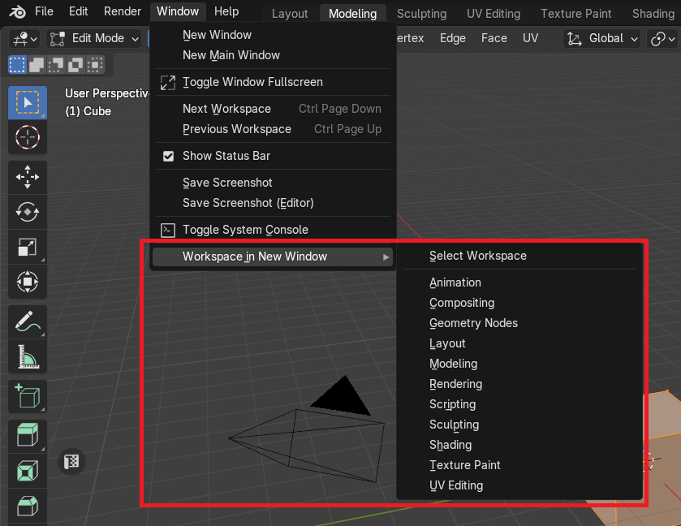
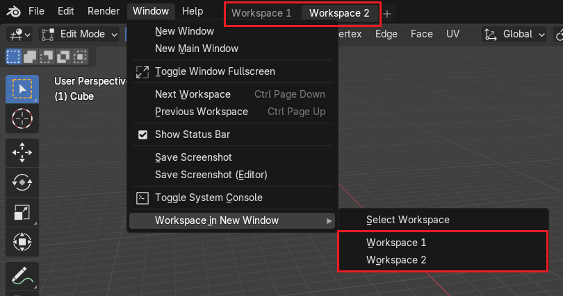
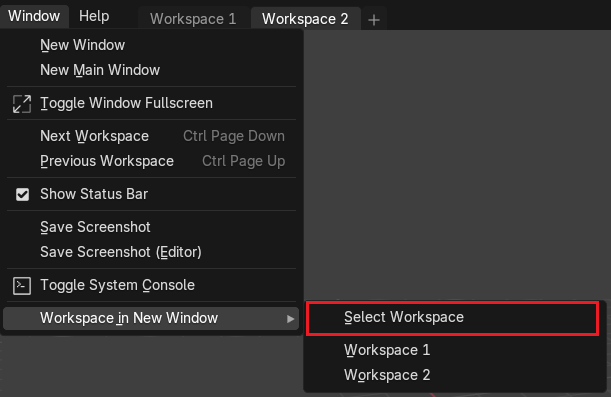
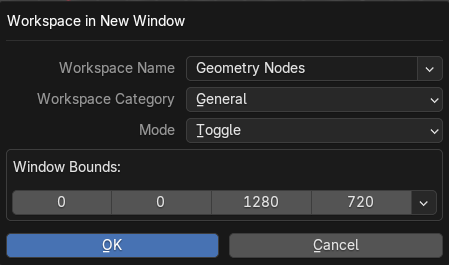
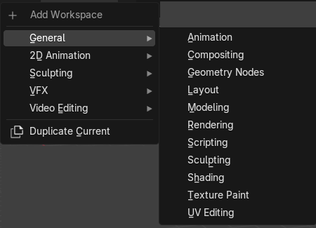
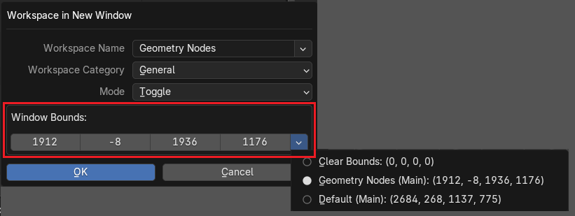

Tools
Open Workspace In a New Window
Operator to open or toggle workspace in a new window with an option for Windows OS users to specify window coordinates.
|  |
|---|
{kind=link}
Current Blend Workspaces Presets
Set of workspaces that is saved in the current blend file can be quickly accessed to toggle in a new window via menu buttons.
|  |
|---|
{kind=link}
Workspace In a New Window Options
You can select a workspace and adjust conditions for a hotkey.
|  |
|---|
{kind=link}
|  |
|---|
{kind=link}
Workspace Name
Must be a valid name of the existing workspace in the current blend file or in the one of the default layouts.
Workspace Category
Must be a valid category name that are shown during “Add Workspace” menu.
|  |
|---|
| Workspace name must match the name in the wizzard |
{kind=link}
Mode
Defines the behaviour how to open workspace
Toggle Workspace
If workspace is already open in a window, the window will be closed.
Open Workspace
Always open new window with the corresponding workspace.
Window Bounds
Coordinates of the new window bounds (left, top, width, height) in absolute screen desktop pixel values.
Warning
This option is available only for Window OS users
|  |
|---|
{kind=link}